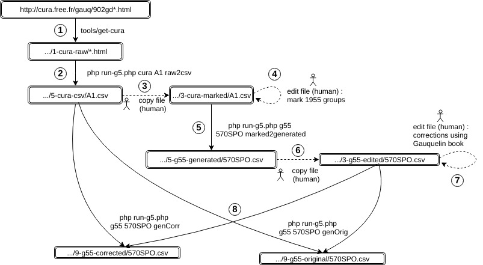

The following diagram illustrates this process :  Note : the directory names used in this page relate to the corresponding entries of
config.yml.
For example, the default value of
1-cura-raw directory is data/1-raw/cura.free.fr/
-
Store cura.free.fr data on a local machine. By human or program.
See page about Cura.
Raw files are in1-cura-rawdirectory. -
Extract data from html pages to generate csv files. By program.
This step also applies corrections.
See page about corrections done to files of serie A.
Generated csv files are in5-cura-csv/directory. -
Copy the generated file to a directory dedicated to human modifications. By human.
Files are copied from5-cura-csv/to3-cura-marked/. -
Associate cura data to Gauquelin 1955 original groups. By human.
The files of3-cura-marked/are modified :- A new column "
1955" is created. - This column is filled with Gauquelin 1955 group codes, (the list is in class
src/g5/transform/g55/G55.php).
Edition looks like that :
- A new column "
-
Generate one file per original 1955 group. By program.
php run-g5.php g55 570SPO marked2generated
This extracts the rows marked with "570SPO" from3-cura-marked/A1.csvto generate5-g55-generated/570SPO.csv
This step uses a setting fromconfig.yml(g55 / sort). This is necessary because in the next step, the generated files are compared to Gauquelin 1955 book. To make this easier, the generated files must be sorted like in the book, and this sorting is not the same for all groups. -
Copy these files to directory
3-g55-edited/By human.
Files of5-g55-generated/must then be copied to3-g55-edited/, a directory dedicated to human modifications. -
Edit the files located in
3-g55-edited/(by human).
This is the long part of the work : note the differences between Gauquelin 1955 book and cura data.
Once a file has been copied to3-g55-edited/, columns where the corrections will be written are manually added.
These column are named with a postfix_55.- GIVEN_55 : Given name
- FAMILY_55 : Family name
- HOUR_55 : Hour HH:MM
- DAY_55 : Day YYYY-MM-DD
- PLACE_55 : Name of place (Exact spelling of geonames.org)
- C2_55 : COD in cura vocabulary = ADM2 in geonames = département for France
- CY_55 : ISO 3166 country code
- OCCU_55 : Occupation code
- NOTES_55 : Free notes
This step is easier when two persons work together : one reads the book, the other writes the corrections
In step 5, the program added a columnORIGIN, filled with the code of cura file (for570SPO.csv, this column is filled with valueA1).
Some records are present in Gauquelin book and not in cura file ; in this case, the fieldORIGINis notedG55. -
Generate downloadable files (by program)
todo